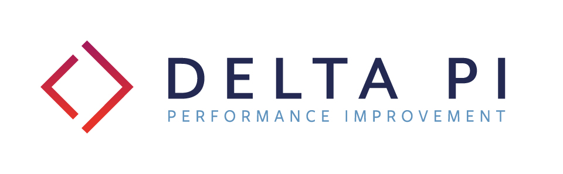

Zelfde water: zout/west · scheepvaart · polder (natuur+agro) — wie heeft voorrang?
Daagt uit op Prioriteren als niet alle prestaties tegelijk haalbaar zijn.
Bekijk bron ↗
Samen klaar voor morgenGesprekstarter · voor de adviseur biodiversiteit
Hoe krijg je biodiversiteit net zo expliciet in assetbesluiten als veiligheid of beschikbaarheid — zonder een apart natuurtraject?
In jullie AM-sturing wegen prestaties als veiligheid en beschikbaarheid al mee. Biodiversiteit landt vaak nog als extra of te laat. Gebruik A–C voor gedeelde taal en spanning; diagnoseer op D · Jullie pad waar biodiversiteit bij jullie binnenkomt — zodat je in de waardematrix en op het juiste moment (meekoppelen of checklist) dezelfde besluittaal spreekt.
Klik één stap of instap voor de openingsvraag. Uitwerking en casus staan op Jullie pad.
Juiste moment — twee instappen
Kies de framing die hier speelt. Markeer daarna op Jullie pad waar dat bij jullie landt.
Gedeelde besluitlijn (compact)
Klik wat hier wint onder druk. Door naar Jullie pad voor waardematrix en prioritering.
Onder druk wint niet altijd biodiversiteit.
Beide leiden naar Besluit; geen rangorde welke “beter” is.
Markeer waar biodiversiteit nu binnenkomt — één of meer stappen. Elke klik opent gespreksstof (casus, vragen). A–C verwijzen hierheen.
Optioneel: markeer hoe biodiversiteit binnenkomt. Beide leiden naar Besluit; geen rangorde welke “beter” is.
Verdieping voor aan tafel
Kies één of twee kaarten die aansluiten bij het domein van je gesprekspartner. Suggesties volgen uit A–D.
D is de diagnose (waar landt biodiversiteit?). A levert de gedeelde taal, B de bijlage-framing, C de druk onder schaarste — klik daar om door te verwijzen naar D. Pak daarna 1–2 gemarkeerde domeinkaarten.
10 kaarten
Zelfde water: zout/west · scheepvaart · polder (natuur+agro) — wie heeft voorrang?
Daagt uit op Prioriteren als niet alle prestaties tegelijk haalbaar zijn.
Bekijk bron ↗Bij schaarste: onomkeerbare natuurschade in cat. 1; overige natuur vaak cat. 4 — formele rangorde, geen ‘extra’.
Daagt uit op Formele rangorde discussabel maken zonder biodiversiteit te romantiseren.
Bekijk bron ↗Rivierkreeft raakt waterkwaliteit + oever/NVO: wegvangen of ecosysteemherstel — of beide, en wie betaalt (waterschap/Rijk)?
Daagt uit op Exotenbeheer wegen als waterkwaliteits- en assetkeuze, niet als apart natuurproject.
Bekijk bron ↗Als eco bijdraagt aan assetfunctie → in SAMP/bedrijfswaardenmatrix, niet als bijlage.
Daagt uit op Ecologische waarde formuleren als volwaardige assetprestatie.
Bekijk bron ↗Beslisboom weegt sterkte · eco-potentie · budget; insecten-optimaal ≠ altijd uitvoerbaar.
Daagt uit op Sterkte, eco-potentie en budget in één afweging zetten.
Bekijk bron ↗Ladder: natuurlijker → hergebruik → MKI → pas dan staal/beton; waar zit biodiversiteit?
Daagt uit op Biodiversiteit vroeg genoeg meenemen in de keuze tussen alternatieven.
Bekijk bron ↗Spoorveiligheid (zicht/vlucht/brand) eerst; eco-berm alleen daar waar het mag — en IenW geeft geen apart biodiversiteitsbudget.
Daagt uit op Biodiversiteit sturen binnen harde veiligheids- en budgetrandvoorwaarden.
Bekijk bron ↗Biodiversiteit via certificaat/contract in de aanbesteding — sturen in bestek of alleen in intentie?
Daagt uit op Ambitie vertalen naar een toetsbare contract- of inkoopeis.
Bekijk bron ↗KPI’s bestaan; vraag is of ze in hetzelfde besluitmoment zitten.
Daagt uit op Bestaande KPI’s verbinden aan het feitelijke besluitmoment.
Bekijk bron ↗Gedragscode (beheer en onderhoud) en soortenmanagementplan (gebied, vergunning): spelregels vooraf, logboek achteraf — staan ze in beheerplan en bestek?
Daagt uit op Wettelijke soortenbescherming en data uit het ecologisch logboek verbinden aan de AM-cyclus.
Bekijk bron ↗Achtergrond (niet nodig voor het gesprek): KWR/WUR gidsmodellen assetbesluitvorming; Rli Natuurinclusief Nederland (2022); Naturalis/Alliander besturingsmodel (2024); Naturalis Statusrapport 2026.